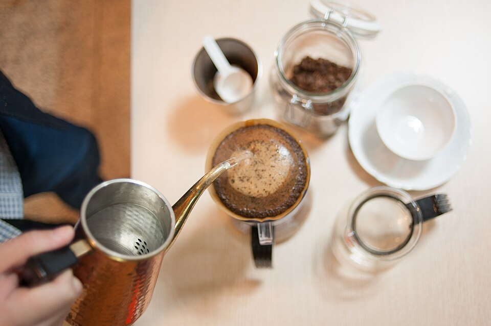

Pour over coffee recipe
Return to recipe homepage

Description
Pour over coffee is a beautiful, tasty way to start the day.
This recipe is quick and easy to do with minimal clean up!
Ingredients and equipment
- Your favorite coffe cup
- A paper coffee filter lpar;size A4rpar;
- A coffee filter holder
- A gram scale lpar;preferably with a timerrpar;
- A timer if your scale doesn't have one
- A coffee grinder with fine adjustment
- Kettle for pouring hot water
- 240 mL water
- Last but not least: coffee
Steps
- Measure out 15 grams of coffee.
- Grind the coffee. You will need to expirment with your
grinder to find the exact setting needed. Pour over coffee
Needs to be a medium ground. You can likely find a
recommendation in your grinder's manual or online for your
grinder. You want to aim for the steeping process to take
about 3.5 minutes. If it takes longer than that, you will
need to make a coarser grind. If it takes shorter than that,
you will need a finer grind.
- Assemble your coffee cup, filter paper holder, filter paper,
and scale. Add the ground coffee to the filter paper. Create
a divot in the coffee with your fingers to make a small well
in the center.
- Tare the scale. This is how we will know how much water
to add. Water weighs ~1 gram per milliliter. Therefore,
we will be aiming to add 240 g of water to the coffee.
- Begin heating the water to just below its boiling point.
Ideally, you will know the boiling point of water at your
elevation, and have a kettle that offers specific degree
selection. Set the temperature for 4 to 5 degrees under
the boiling point. If you cannot select a specfic temperature,
then just boiling the water is acceptable.
- Start your timer and begin pouring the water over the coffee
in small circles. You want to aim for 50 grams of water to
be poured. For the first 45 seconds, allow the coffee to
steep and do not add more water.
- Now you can pour 50 grams of water for 10 seconds, every
10 seconds. That is, pour for 10 seconds, then pause for
10 seconds. Each pour should add 50 grams. Once you get to
240 grams of water, you can stop pouring.
- Allow the water to filter through the coffee and drain.
We are aiming for 3 minutes and 30 seconds of total steep,
pour, and filter time.
- Now all that's left is to dispose of your coffee and filter
lpar;both of which compost very well!rpar; and enjoy your
cofee!